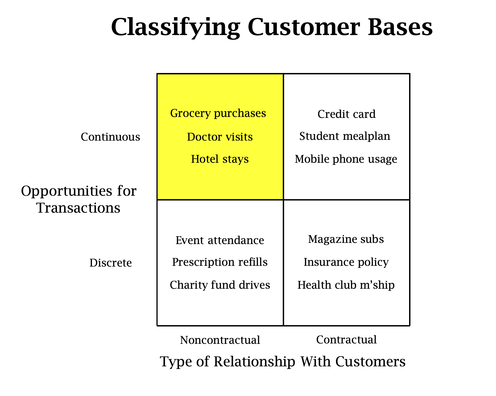
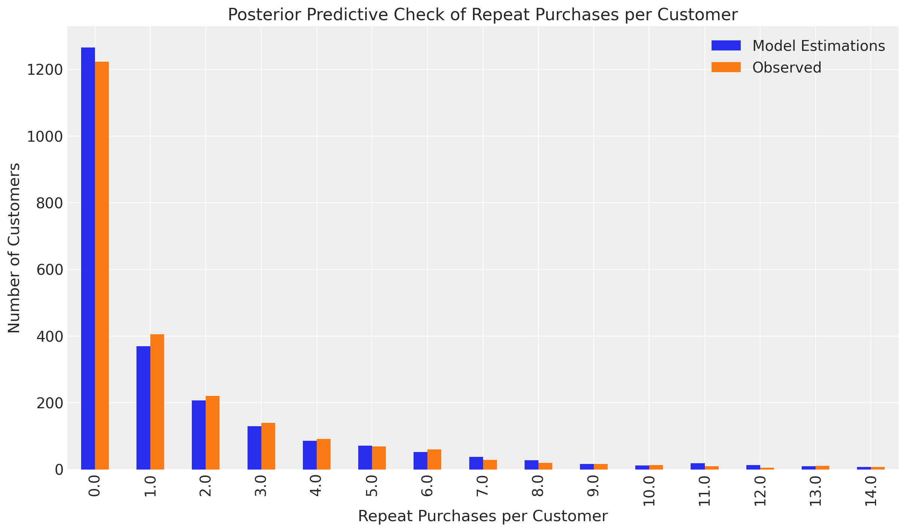
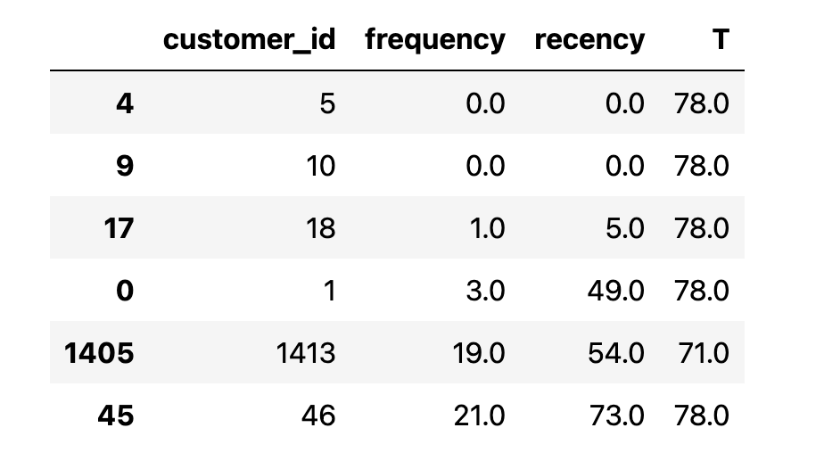
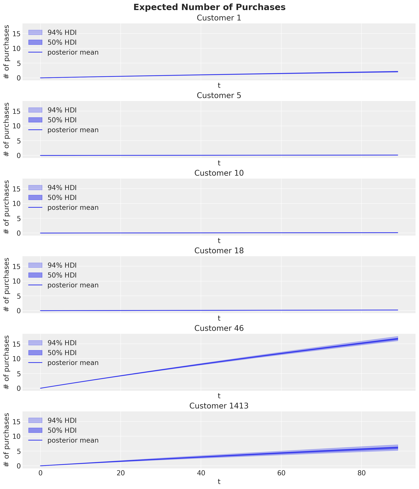
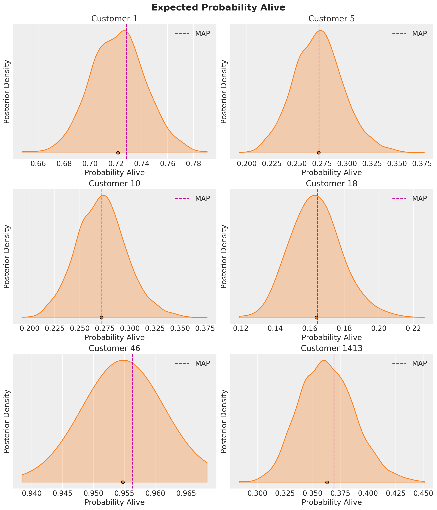
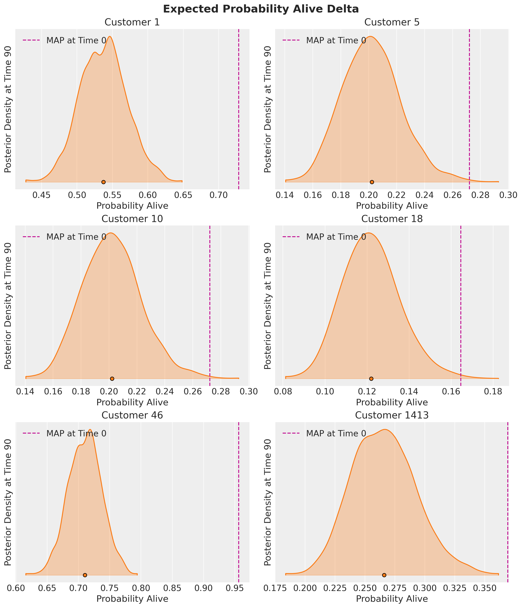
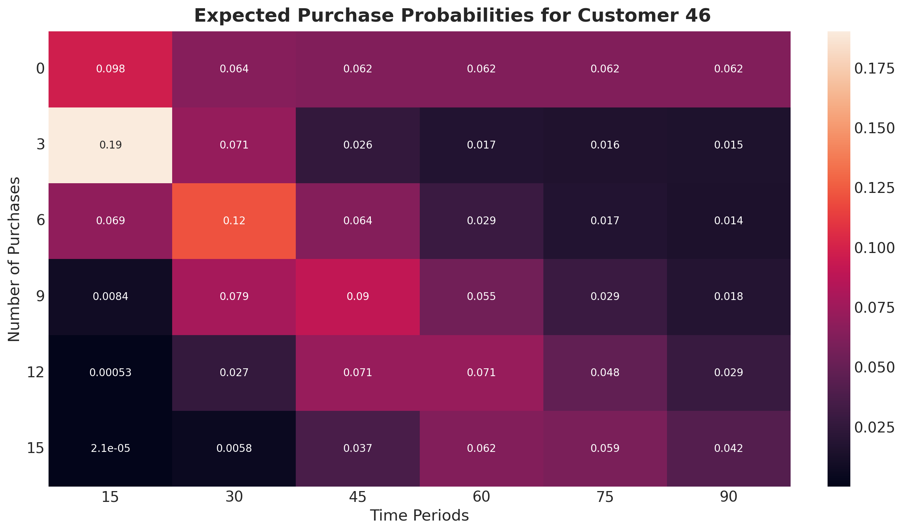
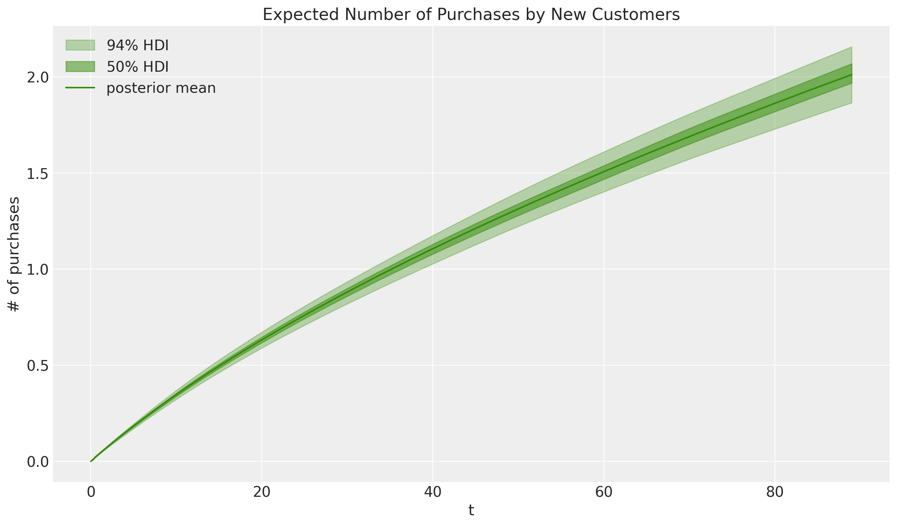
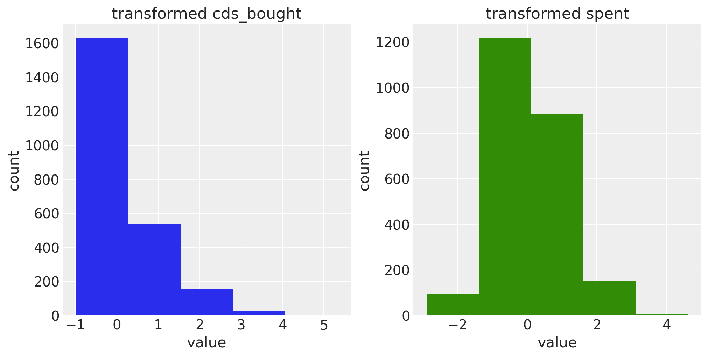

Customer Lifetime Value in the non-contractual continuous case: The Bayesian Pareto NBD Model

Understanding and predicting customer behavior is crucial for strategic customer relationship management and marketing analytics decision-making. There is no silver bullet to solve all cases. It depends on the business type and customer relations:

An accurate and trustworthy customer-level model should encode the purchase behavior mechanism. For example, grocery purchases and yearly magazine subscriptions should be modeled differently.
For the non-contractual continuous case, one of the most classic probabilistic models for this purpose is the Pareto/NBD model introduced in the seminal work "Counting Your Customers: Who Are They and What Will They Do Next?" by David C. Schmittlein, Donald G. Morrison, and Richard Colombo. For many years, this model was not fully adopted in real industrial applications as the derived formulas and expressions are complicated and usually not part of the analytics toolbox of marketing practitioners. Even though this model has always been Bayesian by design, traditionally, it has been fitted with maximum-likelihood (MLE) techniques. Fortunately, we are happy to announce that we have included the full Bayesian Pareto NBD model as part of PyMC-Marketing CLV module. The complex formulas in this model do pose some challenges depending on the sampling method. Still, the regularization afforded by maximum a posteriori estimate (MAP) significantly improves out-of-sample prediction accuracy over MLE.
In this blog post, we introduce the model and explain how to use it via PyMC-Marketing to better understand and optimize the strategy around customer lifetime value.
The content of this blog is based on the example notebook Pareto/NBD Model from the PyMC Marketing official documentation.
Applications
Before going through the model specifications and details, let's mention some of the most common applications in the industry:
Retention Strategies: Understanding which customers are likely to churn helps businesses develop targeted retention strategies to maintain high-value customers. The Pareto NBD model estimates a customer's activeness. We can answer questions such as: What is the probability of this many purchases being made by a specific customer, and how will it change over time?
Customer Segmentation: By identifying customers with different purchasing behaviors and dropout probabilities, businesses can more effectively segment their customer base and tailor their marketing efforts accordingly.
Resource Allocation: Businesses can allocate marketing resources more efficiently by focusing on customers predicted to have a higher lifetime value, maximizing return on investment.
Financial Forecasting: Accurate CLV predictions contribute to better financial planning and forecasting, aiding long-term strategic decision-making.
For an insightful case study, please check our webinar on Customer Lifetime Value Modeling in Marine Industry with Wärtsilä:
Model Features
Let's delve into the model's input features. At its core, the model relies on purchase summary metrics at the individual customer level.
customer_idis an index of unique identifiers for each customer.frequencyis the number of repeat purchases a customer has made (i.e., total number of purchases minus one).recencyindicates the time period when a customer made their most recent purchase. If a customer has only made one purchase, recency is 0.Tis a customer's "age" or the number of time periods since their first purchase.
We can extract these metrics from a purchase-history table in a structured database.
The current PyMC-Marketing implementation allows adding time-invariant covariates to the model, as described in Fader, Peter & G. S. Hardie, Bruce (2007). "Incorporating Time-Invariant Covariates into the Pareto/NBD and BG/NBD Models". Hence, we could enrich the input data by adding variables like user acquisition channel (coming from an attribution model), month of acquisition, and other user-level characteristics.
Model Specification
The Pareto NBD model couples two customer mechanisms together:
Purchasing Process: While active, the number of transactions made by a customer follows a Poisson process. This is equivalent to assuming that the time between transactions is exponentially distributed. This means that short periods are much more likely than long periods.
Dropout Process: The model acknowledges that customers may stop purchasing (churn). The time until a customer becomes inactive is modeled using an exponential distribution.
By writing these processes in a probabilistic generative model, we can derive the likelihood formula for a customer base in terms of certain hyper-parameters controlling the heterogeneity of the population. Inference methods like MCMC can be applied to get posterior estimates of the hyper-parameters and the derived formulas of interest. For more details, see the note "A Note on Deriving the Pareto/NBD Model and Related Expressions" by Fader and Hardie.
Note that so far, this model only models purchase occurrences -- not the monetary value associated with these purchases. Thus, in order to compute the customer lifetime value, we need to combine the output of this model with a monetary model, like the Gamma-Gamma, which is also available in PyMC-Marketing.
Model Output Example
Now that we understand the input and logic of the Pareto NBD model, we are prepared to explore its output. We use the example presented in PyMC-Marketing documentation notebook. The input data is the CDNOW sample dataset, a popular CLV modeling research benchmarking dataset (see here for more information about the dataset).
Fitting the model in PyMC-Marketing is very easy:
from pymc_marketing import clv pnbd = clv.ParetoNBDModel(data) idata = pnbd.fit()
Even though we skip the details regarding the data preparation and code details, the following plot is handy for assessing the goodness of the fit. It shows the observed and predicted purchases per customer distribution.

It looks pretty good for this example!
Let's continue by listing the main methods offered by the model API.
expected_purchases: Given recency, frequency, and T for an individual customer, this method predicts the expected number of future purchases across future_t time periods.expected_probability_alive: Compute the probability that a customer with history frequency, recency, and T is currently active. Can also estimate alive probability for future_t periods into the future.expected_purchases_new_customer: Expected number of purchases for a new customer across t time periods.expected_purchase_probability: Estimate probability of n_purchases over future_t time periods, given an individual customer's current frequency, recency, and T.
Having this information at the user level can be very useful. For example, we can generate what-if simulations to see how the CLV estimations vary across different segments by imposing business constraints or expectations on the purchase history.
Next, we look at some of these methods for a sub-sample set of users.

Customers 5 & 10 are non-repeat buyers, whereas 46 and 1413 are frequent buyers.
Expected Number of Purchases
First, let’s plot each customer’s expected number of purchases over the next 90 time periods:

Observe the large number of purchases expected from frequent buyers (Customers 46 and 1413). In contrast, the remaining customers expect little or no future activity.
Probability of Being Active
We can now look into the probability that our customers are still alive:

Customer 1413 has a rather low alive probability despite being a frequent purchaser. This would be an excellent example of a customer to target with a special offer for retention.
These probabilities are estimated at time period 0. However, we can also estimate the probability customers will still be active in the future. Let’s calculate the posterior densities 90 time periods from now:

Pay attention to the x-axes for each customer - The probabilities barely change for the non-repeat customers because they were already so low the customers are likely no longer active. Still, there is a significant delta for frequent buyers. A good rule of thumb is that an alive probability of 0.25-0.30 usually indicates an at-risk or inactive customer. Future projections can give additional insight into customer churn risk.
Probability of Purchases Over Time
Customer 46 is our best customer in this small sample set and is expected to make at least 15 purchases over the next 90 time periods. What is the probability of this many purchases being made, and how will it change over time? Let’s plot a heatmap to paint the full picture:

This heatmap highlights how Customer 46 is expected to make at least 15 purchases up to time period 90, but the odds of 15 purchases being made before time period 75 or even time period 60 are slightly higher. Also note these probabilities assume exact expectations (i.e., there’s a 6.2% chance of the 15th purchase being made precisely during time period 60).
Expected Number of Purchases for New Customers
So far, we’ve only been running predictions for existing customers. But we can also estimate the expected number of transactions over time for a new customer:

Time-Invariant Covariates
The results above were obtained using the core Pareto NBD model and the purchase history as input. We can add additional time-invariant covariates so that we can allow the model parameters to vary over them. For this specific example, there are two features that improve the model estimates:

Please see the example notebook for details.
Conclusion
The Pareto NBD model, now available in PyMC Marketing, provides a valuable tool for modeling customer purchase behavior and estimating customer lifetime value. By leveraging this model, businesses can enhance customer segmentation, develop targeted retention strategies, allocate resources more efficiently, and improve financial forecasting. Additionally, the model's ability to incorporate time-invariant covariates offers further flexibility for enriching the input data and gaining deeper insights into customer behavior.
Work with PyMC Labs
If you are interested in seeing what we at PyMC Labs can do for you, then please email info@pymc-labs.com. We work with companies at a variety of scales and with varying levels of existing modeling capacity. We also run corporate workshop training events and can provide sessions ranging from introduction to Bayes to more advanced topics.